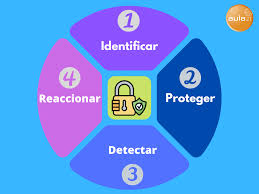
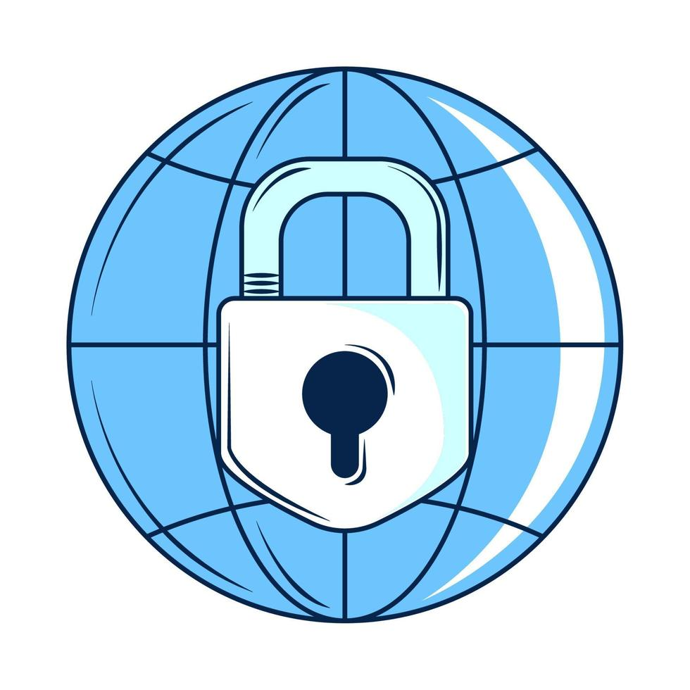

¿Qué es Ciberseguridad?
La ciberseguridad es la práctica de proteger la información digital, dispositivos, redes y sistemas contra amenazas y ataques cibernéticos. Se enfoca en garantizar la confidencialidad, integridad y disponibilidad de la información.

Objetivo Principal
Su objetivo principal es proteger los sistemas, redes y datos contra accesos no autorizados, interrupciones de servicios y ciberataques, manteniendo la información segura y disponible.

¿Por qué es importante?
Protege contra amenazas maliciosas a computadoras, móviles, servidores y redes. Es clave para resguardar la información personal y empresarial frente a posibles ataques.